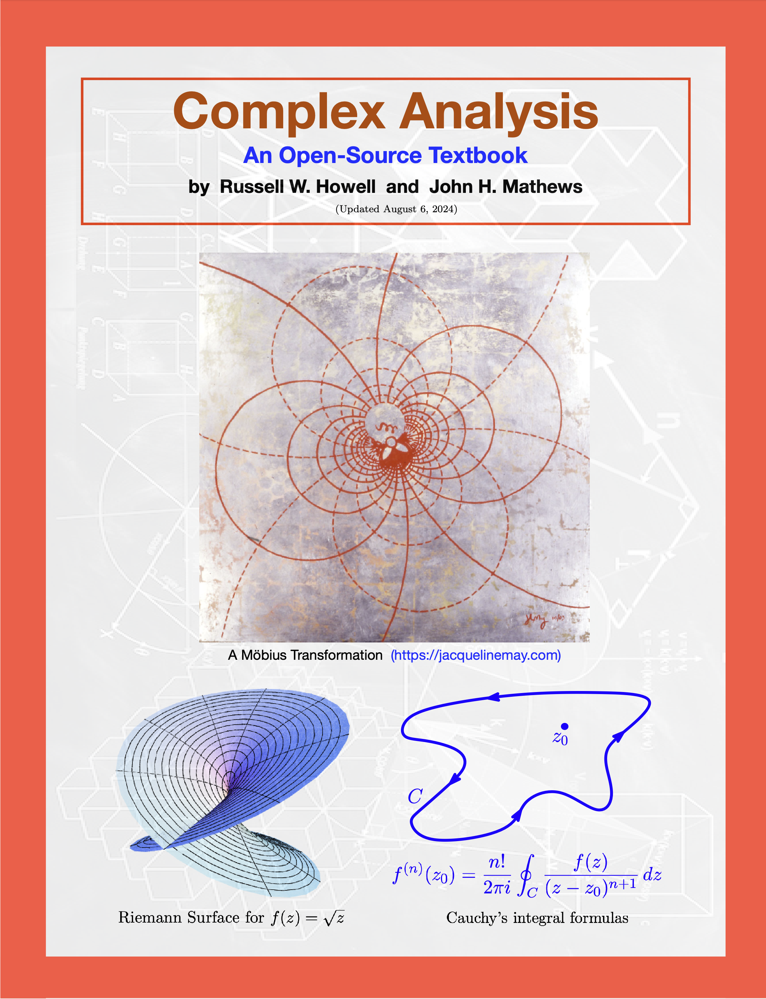

ComplexAnalysis.org
Resources for Students and Teachers of Complex Analysis
This website provides a free textbook for students and teachers of complex analysis. Under development is a section with topics (proposed by a variety of scholars) that are suitable for undergraduate research, either as a summer REU-like session at one’s home institution, or for exploration during the standard academic year.

Textbook
Originally published through six editions by Jones and Bartlett Learning with the title Complex Analysis for Mathemaics and Engineering, this resource is now freely available online in both PDF and HTML formats. It bears the title Complex Analysis: An Open Source Textbook. The HTML version is written in PreTeXt and has been endorsed by the Open Textbook Initiative at the American Institute of Mathematics.
-
Read online (HTML version)
-
- Purchase a low-cost print edition (forthcoming)
REU Projects (forthcoming)
Contact:
Russell W. Howell is Kathleen Smith
Professor of Mathematics at Westmont College, Santa Barbara, CA.
Feedback is welcome and appreciated. Email: howell@westmont.edu.
License:
This work is licensed under a
Creative Commons Attribution 4.0 International License © Russell W. Howell, 2024.